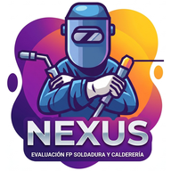

Nueva práctica predefinida
📐 Toca para añadir un plano, croquis o foto de la pieza
Departamento de Fabricación Mecánica · 2026-2027
Frases que observas en el taller y marcas con Sí / No (cuentan para los criterios vinculados). Las informativas aparecen en la ficha y el informe, pero no cuentan para la nota.
Desmarca los criterios que no vas a trabajar este curso. Dejan de aparecer en prácticas, observación, exámenes y PDF, y no cuentan en la nota. Lo ya puntuado no se borra: si vuelves a marcarlo, reaparece.
Se eliminarán también todas sus evaluaciones. Esta acción no se puede deshacer.

Antes de empezar (una vez por módulo):
Entra en el módulo y pulsa ⚙ Criterios y prácticas:
• Desmarca los criterios que no vas a trabajar este curso.
• Si tu programación lo indica, pon el peso de cada RA (si no, todos pesan igual).
• Define las prácticas: nombre, criterios que evalúa e imagen (plano, croquis o foto de la pieza).
Indicadores de evaluación:
En ⚙ Criterios y prácticas puedes tener una lista de indicadores: frases concretas («Calidad de las uniones soldadas», «Mantiene su puesto limpio…») vinculadas a uno o varios criterios. Las prácticas se puntúan por indicadores (0-10) y la observación usa los indicadores Sí/No; cada nota pasa a sus criterios. Los informativos aparecen en la ficha y el informe, pero no cuentan para la nota. Todos los módulos traen una propuesta inicial que cubre todos sus criterios de práctica y actitud: revísala y adáptala a tu programación.
Flujo básico:
1. Elige la clase. Solo aparecen las clases y los módulos que impartes: se marcan en ⚙ Ajustes → Módulos que imparto.
2. Selecciona el módulo
3. Escoge al alumno
4. Evalúa en las 3 pestañas: Prácticas · Observación · Examen
Prácticas (procedimental · P):
Pon la nota de la práctica de 0 a 10: se aplica a todos sus criterios. Si un criterio destaca o falla, ajústalo con su propia nota. Con 📐 Ver la práctica se abre su imagen a pantalla completa.
Para calificar a toda la clase en una sola pantalla, usa 📋 Evaluar a toda la clase desde la lista de alumnos. Sirve para prácticas (cada alumno con su nota de 0 a 10), para la observación de actitud (un indicador cada vez, Sí o No por alumno, con «Todos Sí» para ir rápido) y para exámenes: el examen se crea una sola vez (nombre, fecha, si es obligatorio y criterios) y escribes la nota de cada alumno seguida, pasando al siguiente con Intro. En la ficha de cada alumno aparece con su nota.
Observación (actitudinal · A):
Crea una sesión (recomendado: 2 por trimestre) y marca Sí / No en cada criterio. En cada criterio, Sí cuenta 10 y No cuenta 0, y se hace la media de todas las sesiones. Algunos módulos (3015 y 3073) no tienen criterios de actitud en el currículo.
Examen (teórico · T):
Añade cada examen con su nombre, fecha y nota (admite decimales), y marca los criterios que evalúa. Además de los de teoría, puedes marcar cualquier otro criterio del módulo, por ejemplo los de prevención de riesgos. Si no marcas ninguno, cuenta para todos los criterios de teoría.
Marca un examen como 🔒 obligatorio (p. ej. la prueba de seguridad para bajar al taller) y el alumno no podrá aprobar el módulo hasta superarlo con un 5.
Informe PDF:
Desde cada alumno, 📄 Exportar informe genera un PDF con la nota de cada RA, la nota del módulo, las prácticas con sus fotos, la observación y los exámenes. Desde el resumen de clase puedes exportar el PDF de toda la clase.
La nota del módulo se calcula por resultados de aprendizaje (Orden 18/09/2025, arts. 2.7 y 19):
Criterio = media de prácticas, observación y exámenes · RA = media de sus criterios · Módulo = media de los RA según su peso
Condición de aprobado: todos los RA con 5 o más y cada parte (prácticas, actitud y teoría) con 5 o más. Si no, la nota queda en 4 como máximo.
Cada parte se calcula por instrumento: prácticas = notas de las prácticas · actitud = hoja de observación · teoría = exámenes. Un examen cuenta siempre en teoría, aunque evalúe criterios de procedimiento (por ejemplo, la prueba de seguridad).
La nota final es entera, de 1 a 10. Los pesos de los RA se configuran en ⚙ Criterios y prácticas (por defecto, todos iguales).
La nota es acumulada (todo lo evaluado desde el inicio de curso) y está en curso hasta que cierras la evaluación con el botón «Cerrar» de la lista de alumnos. Al cerrar, se guarda la nota de cada alumno en ese momento y ya no cambia; aparece en la lista, en la ficha y en el informe PDF. Si te equivocas, puedes reabrir la última evaluación cerrada.
Si a un alumno le falta por evaluar alguna parte (prácticas, actitud o teoría), su nota sale en ámbar con el aviso «falta…». El detalle por partes y por RA está en la ficha del alumno, en «Ver detalle de la nota».
Escala de las prácticas (0-10):
0-4 No conseguido · 5-6 Conseguido justo · 7-8 Conseguido · 9-10 Excelente
Criterios "no computa":
Si en una práctica un criterio no tiene nota, no afecta a la media.
Criterios oficiales:
Todos los criterios están vinculados a los RA y CE del currículo andaluz:
• CFGM Soldadura y Calderería: Orden de 7 de julio de 2009 (BOJA nº 150, 4/08/2009).
• FP Básica Fabricación de Elementos Metálicos: Orden de 8 de noviembre de 2016, Anexo XXIV (BOJA nº 241, 19/12/2016).
La clasificación de cada criterio como práctica (P), actitud (A) o teoría (T) es una decisión metodológica del profesorado (no la fija el currículo). Sirve para ordenar los criterios y para saber a qué criterios cuenta un examen sin criterios marcados (a los de teoría); la parte en la que se suma una nota la decide el instrumento.
Importante: lo que configures en NEXUS (criterios trabajados, pesos de los RA y condición de aprobado) debe coincidir con tu programación didáctica (art. 3 de la Orden 18/09/2025).
Los datos se guardan en IndexedDB del navegador — una base de datos local del dispositivo.
¿Cuánto espacio necesita?
Orientativo: para 40 alumnos con fotos de prácticas, unos 40-80 MB. El navegador te deja usar centenares de MB, así que sobra espacio. Puedes ver el uso real en ⚙ Ajustes → Gestión de datos.
¿Cuándo se guarda?
Cada cambio se guarda automáticamente al momento, y también al cambiar de app o cerrar la ventana. Si algún guardado falla, aparece un aviso rojo con el botón «Reintentar»: en ese caso, no cierres la app y haz una copia de seguridad.
¿Los datos se pueden perder?
En condiciones normales, no. Al abrirla, la app pide al navegador que guarde los datos como "persistentes", y si está instalada como app, normalmente lo concede. Aun así, los datos solo existen en este dispositivo: si se rompe, se pierde o se borran los datos del navegador, solo se recuperan desde una copia de seguridad.
Riesgo sin instalar como app:
Si usas la app solo como página web y pasas mucho tiempo sin abrirla (ej. Safari iOS tras ~7 días), el navegador puede borrar los datos. Por eso conviene instalarla.
Copias de seguridad:
Ve a ⚙ Ajustes → Gestión de datos → Copia completa. Te pide una contraseña y descarga un archivo cifrado: sin la contraseña nadie puede leerlo, aunque el archivo acabe en manos de otra persona. Si olvidas la contraseña, esa copia no se puede recuperar. Para recuperarla, usa "Restaurar copia". Si pasan 7 días sin copia, la app te lo recuerda al abrirla. La fecha de la última copia aparece en Gestión de datos.
🔐 Las copias se guardan cifradas (AES de 256 bits) con la contraseña que eliges al hacerlas: sin ella, el archivo no se puede leer. Aun así, guárdalo preferiblemente en el almacenamiento corporativo de la Junta y usa una contraseña que no uses en otros sitios. Las copias antiguas (anteriores a la v88) no están cifradas: bórralas cuando tengas una copia nueva.
Los datos del alumnado nunca salen de tu dispositivo. NEXUS no tiene servidor, no hay cuenta, no hay login, no hay sincronización en la nube.
Lo único que la app descarga de internet es su tipografía (Google Fonts) y la librería que genera los PDF (cdnjs). En esas descargas no se envía ningún dato de alumnos ni de notas.
Es el equivalente digital a un cuaderno del profesor: la información vive solo en tu dispositivo, tú decides qué hacer con ella.
Buenas prácticas:
• Protege tu dispositivo con PIN o contraseña
• Usa códigos o iniciales en lugar de nombres completos siempre que puedas
• No compartas el dispositivo desbloqueado con la app abierta
• Exporta copias de seguridad periódicamente
• Al final del curso, exporta un backup y borra todo
Responsabilidad docente:
Como cualquier herramienta personal de apoyo, el uso de esta app es responsabilidad profesional del docente. Si tienes dudas sobre tratamiento de datos, consulta al Delegado de Protección de Datos de tu centro: dpd.ced@juntadeandalucia.es
Cómo borrar todo:
⚙ Ajustes → Zona de peligro → Borrar TODOS los datos. Requiere escribir "BORRAR" y es irreversible.
¿Funciona sin internet?
Sí, una vez instalada como PWA funciona sin conexión.
¿Puedo usar la app en varios dispositivos?
No hay sincronización automática. Usa exportar/importar para mover los datos manualmente.
¿Y si cambio de móvil?
Antes de cambiar: ⚙ Ajustes → Gestión de datos → Copia completa. En el móvil nuevo: instala la app y en ⚙ Ajustes → Gestión de datos → Restaurar copia.
¿Se pueden compartir los datos con compañeros?
No se recomienda. Los datos de evaluación son personales y confidenciales.
¿Qué hago al final de curso?
Exporta copia completa, guárdala en sitio seguro, y usa "Borrar TODOS los datos" para empezar limpio el siguiente curso.
¿Puedo imprimir las evaluaciones?
Sí. Desde cada alumno pulsa "📄 Exportar informe". El PDF incluye la nota de cada RA, la nota del módulo, las puntuaciones y las fotos de prácticas.
¿Cómo se actualiza la app?
Cuando hay una versión nueva, al abrir la app aparece el aviso «Hay una versión nueva de NEXUS» con el botón «Actualizar». Tus datos no se tocan.
¿Se puede usar en ordenador?
Sí. Desde Chrome o Edge en PC también se puede instalar como app (botón "Instalar" en la barra de direcciones).
Versión:
Stack: HTML5 + JavaScript puro, sin frameworks
Almacenamiento: IndexedDB (navegador)
PDF: jsPDF
Instalación: PWA con Service Worker
Licencia: Uso personal docente
Hecha por un docente, para docentes. Con ❤ desde Andalucía.
Añade comentarios generales que aparecerán en el PDF. Puedes dejarlo vacío si no quieres incluir observaciones.
Esta acción eliminará permanentemente todas las evaluaciones, fotos, alumnos personalizados y configuración. No se puede deshacer.
Si quieres conservar una copia antes de borrar, pulsa Cancelar y exporta primero.